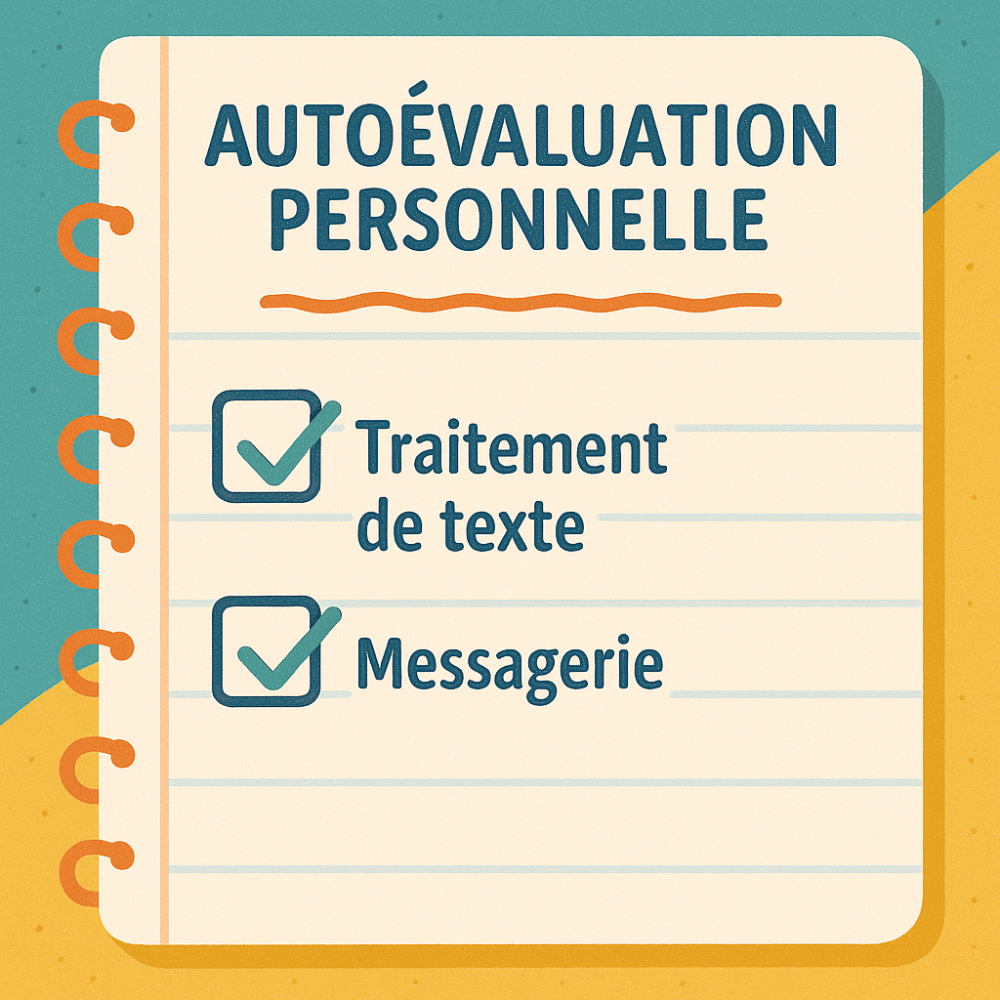

Autoévaluation personnelle
Autoévaluation personnelle
Évaluez votre ressenti et votre progression pour la partie “Traitement de texte” et “Envoi d’e-mail”.
Cochez les affirmations qui correspondent à votre expérience pendant cette activité.
